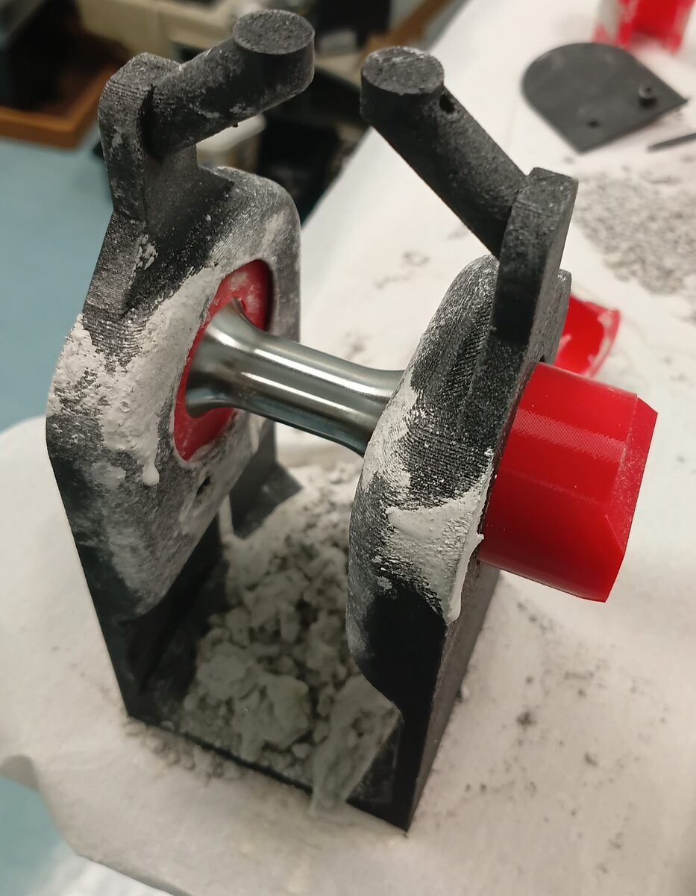
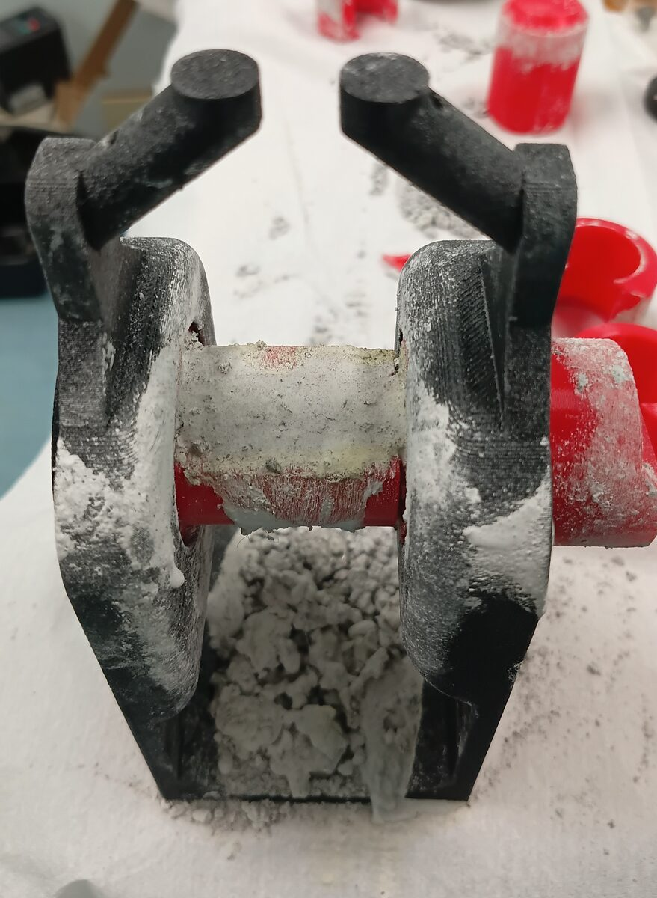
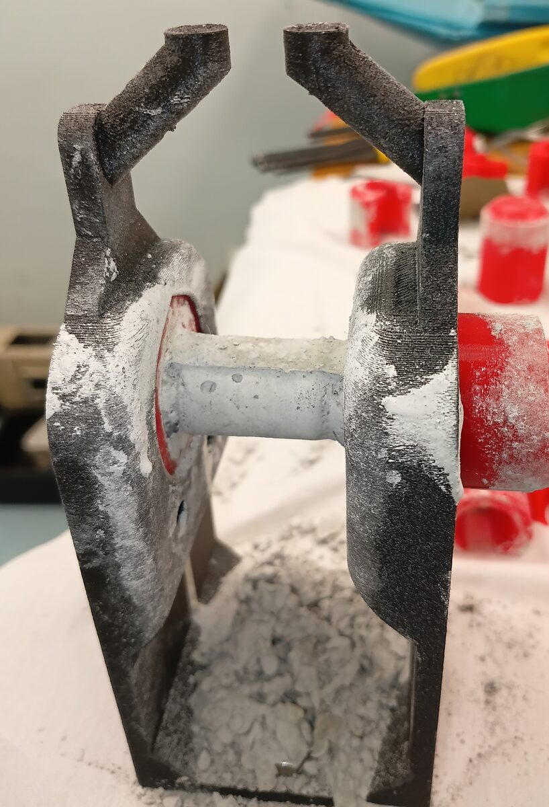
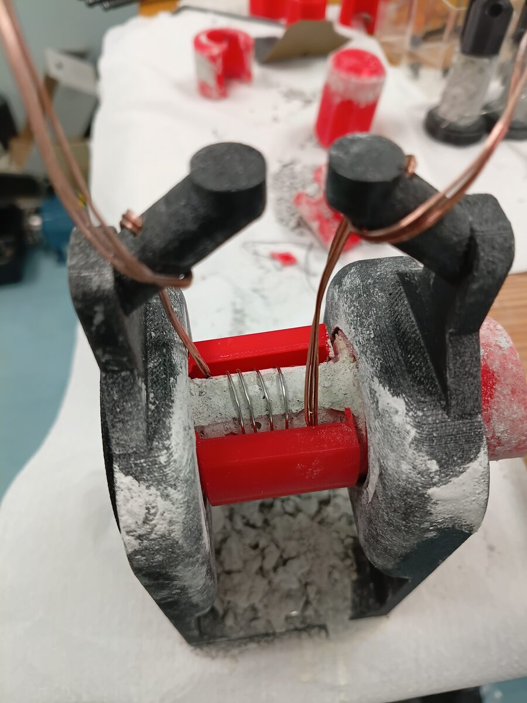

Heating coils
Upon testing, it was found that the insulating setup alone was not enough to provide a uniform temperature. Fortunately, the design allowed for a critical modification: direct heating of the clevises such that they no longer acted as heat sinks on the sample. Nichrome wire and refractory cement were used to manufacture a heating coil around each clevis as shown below.




The clevises could then be put back into the assembly and mounted onto the machine, with thermocouple and power supply wires insulated by alumina beads.

A control circuit was designed and prototyped as well, using an ESP32 which outputs a PWM signal to a MOSFET for each coil. A thermocouple was mounted to each clevis as a feedback signal, and the temperature setpoint was defined by the sample's top face temperature. This gave me a chance to design my first PCB ever, and it turned out just as I had hoped!


Ultimately, the assistance of the auxiliary coils was able to equalize the temperature distribution across the sample, as seen below.